This tutorial will show you how to do comprehensive model validation within the PHENIX graphical user interface (GUI). (Validation in the PHENIX GUI reviews many of the aspects of this tutorial.)
The example used for this tutorial is called Protein Kinase A (3dnd). To get the requisite files open the GUI and set up the tutorial, as described here, called Protein Kinase A (validation). This should setup the main/GUI window. On the right-hand side, under Crystals, click Validation and map-based comparisons and then select Comprehensive Validation (MolProbity).
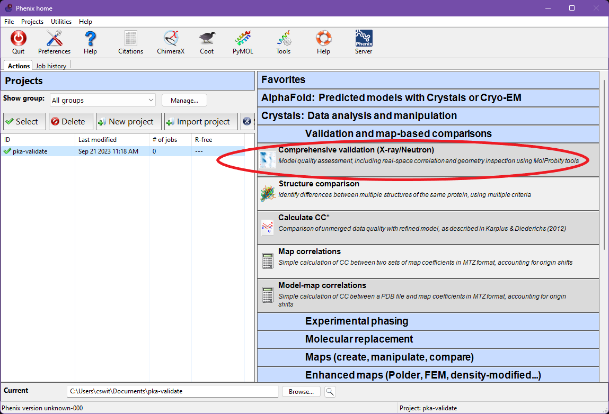
In the "Comprehensive Validation" window, browse to the tutorial directory that you specified above, and select 3dnd.pdb as the "Input model", 3dnd.mtz as the "Reflections file", and 3dnd.ligands.cif as the "Restraints (CIF)" file. This CIF file defines restraints for ligands in input PDB file.
For this model, adding certain validations to the Polygon representation is useful. Scroll down to find the button labeled "Polygon options" and click it. In the window that pops up, turn on the checkboxes for "Ramachandran favored" and "Rotamer outliers". Then hit OK.
Now you are ready to run the program, select Run from the top menu bar.
When validation has run, click on the "Compare statistics" button. This will launch a tool called "Polygon" (it may take several seconds), which is used to simultaneously compare R-work, R-free, RMSD-bonds, RMSD-angles, Clashscore, and Average B factor. Well-built models will usually have a small, fairly equilateral polygon, whereas larger or significantly asymmetric deviations are indicative of model problems.
As you can see for 3dnd, both RMSD-bonds and RMSD-angles are a bit large, beyond the expected peaks for structures of similar resolution. This could indicate that misfit areas of the structure are causing geometric strain. We will visit some of these areas in the next sections.
From the measures we added, you can also see that Rotamer outliers are quite high. Ramachandran favored looks unusual, but this measure should have a high value, unlike the others. More importantly, this structure's Ramachandran favored score falls around the peak of Polygon's histogram for structures of similar resolution. This is important context for choosing which validations to focus on.
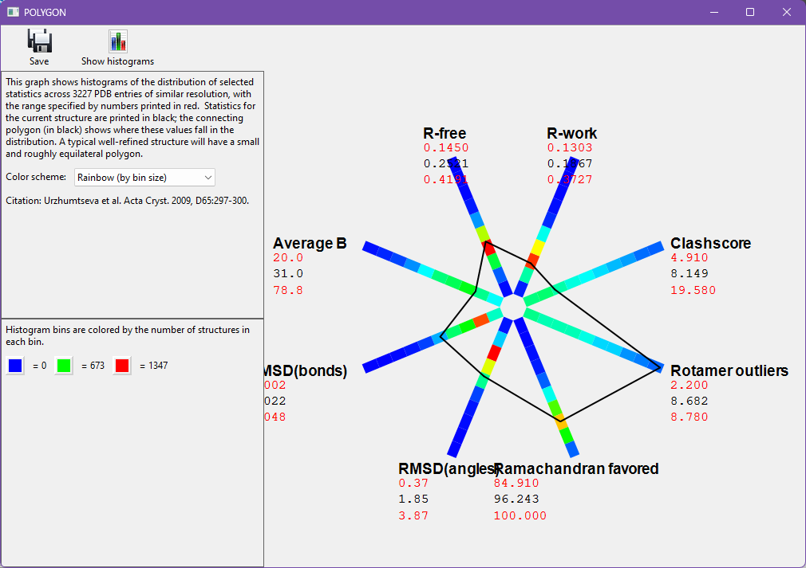
You may close the "POLYGON" window and return to the comprehensive validation window.
Click the "Open in Coot" button. When Coot loads, note that it says "Connected to PHENIX" in the toolbar - this allows the validation GUI to communicate with Coot.
If Coot does not load, go to Preferences->Graphics in the main Phenix window to specify a path to your Coot installation.
Now select the "MolProbity" tab in the Phenix Comprehensive validation window. Under this tab, you will see sub-tabs for "Summary", "Basic geometry", "Protein", and "Clashes". If your model contained RNA, there would also be an "RNA" tab.
Summary
Under the "Summary" tab are most of the same overall statistics that you would find when running the MolProbity webserver. These statistics are colored stoplight-style (green, yellow, and red) as a rough guide the severity of a given result.
Notice the high percentage of rotamer outliers, and large number of C-beta deviations (those combine geometry problems around the C-alpha into a single measure, as explained in Lovell 2003). The Ramachandran favored percent appears a little low, and is colored yellow. However, as we saw in the Polygon above, this value is typical of structures around 2.26Å. The Ramachandran statistics might be improvable, but other validations take higher priority in this context.
This tab also displays Rama-Z score validation. This is a whole-model assessment of how realistic the Ramachandran distribution is and guards against overfitting to Ramachandran criteria. This structure has a reasonable Ramachandran distribution, with all its Rama-Z scores falling within +2 to -2.
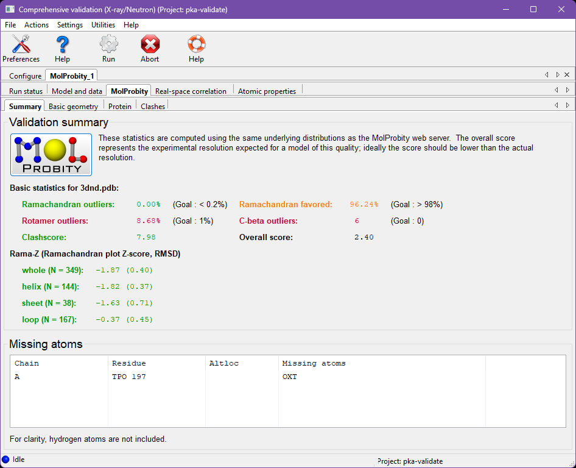
Basic Geometry
From the MolProbity tab, click on the "Basic geometry" tab. Here you find a summary of all bond, angle, dihedral, chirality, and planarity outliers. Outliers will be listed in the associated lists, and each item is clickable, which will center in Coot. Note the bond outlier for Ile A 163 - we'll be seeing this residue again later.
Protein-specific validations
Next, go to the "Protein" tab. This section contains validation information for Ramachandran and rotamer outliers, C-beta deviations, recommended Asn/Gln/His sidechain flips (these have NOT already been done for you, as you can tell if you click on His 39 in the flip list to see it in Coot), and non-trans peptide bonds.
RNA-specific validations
If this structure contained any RNA molecules, there would be an additional tab named "RNA". This section contains validation information for RNA nucleotides with covalent geometry outliers (also found in the Basic geometry tab), RNA nucleotides with sugar pucker outliers, and RNA suites with unexpected backbone conformations.
All-atom Contacts
Go to the "Clashes" tab. This section contains a list of all the steric overlaps >0.4Å (i.e. "clashes") in the structure, sorted by severity. Scroll down the list and note that almost all the clashes involve at least one Hydrogen atom. Hydrogens form most of the steric contacts in a structure and are crucial to contact analysis! Phenix, MolProbity, and Coot will generally ensure that hydrogens are added when you need them, but make sure to use phenix.reduce to add hydrogens manually if you are working outside these systems.
Refinement programs are excellent at optimizing details, but may struggle with large changes across energy barriers. Our corrections are therefore focused on getting residues over energy barriers and into the right local minimum.
Rotamers
Select the Protein tab and find the list of rotamer outliers. Click on Leu 27 from the A chain, which will center on this residue's CA in the Coot window.
As you can see in Coot, this orientation is not a terrible fit to the density - but it is a rotamer outlier and energetically unfavorable due to an eclipsed Chi angle. You can see the eclipsed conformation by looking down the CG-CB bond and noting that the CD1 atom nearly overlaps with the backbone CA. Recentering on CB may help you arrange this viewpoint. The residue also has a suggestive positive difference peak near the CD1.
We'll use the tools in Coot to fix this sidechain. Select the "Auto Fit Rotamer" tool. You can find it in the default toolbar or in Calculate-> Model/Fit/Refine. It looks like a sidechain surrounded by green. Then click on an atom in the Leu 27 sidechain. Did you see it rotate ~180 degrees?
To confirm the correctness of this change, use the "Undo" and "Redo" buttons to observe the change again. Look down the CG-CB bond as before. You should see that the sidechain has a favorable, staggered conformation after the change. Also note that the CD2 atom is now pointed towards the positive difference density peak - you've got the atom close enough to the correct position that refinement should be able to sort out the details.
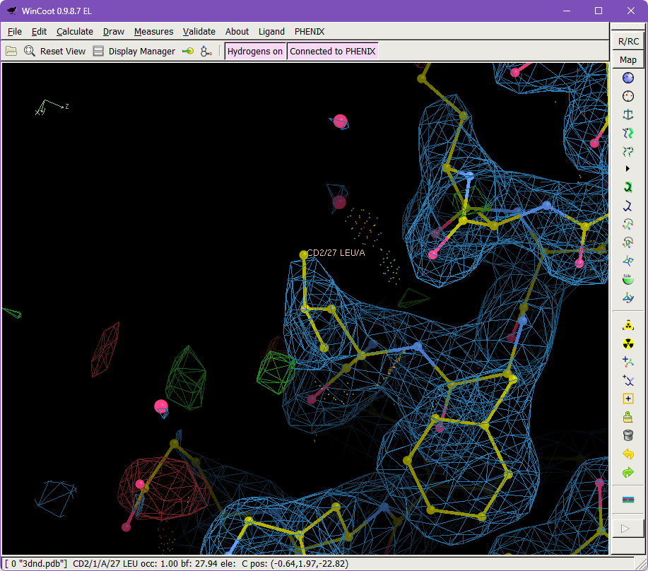
C-Beta Deviations
Return to the Validation GUI window, and find the list of C-beta position outliers. Select Ile 163 from the A chain, which will center on this residue's CB atom in the Coot window. This sidechain also appears in the rotamer outliers list on this tab and on the bond-length outliers list on the Basic Geometry tab. Misfit sidechains will often have multiple diagnostic indicators of a problem, which is useful in identifying the worst offenders. Also note the large blob of positive density near to the sidechain, further evidence that it may not be in an optimal position.
Select the "Auto Fit Rotamer" and then click an atom in the Ile 163 sidechain. Alternatively, you can define a Real Space Refine Zone around this sidechain, and drag the CG2 atom of the short arm into the large difference density peak. Use the "Undo" and "Redo" to toggle back and forth across the change. Note that the CA and especially the CB atoms have moved significantly.
Correcting misfit sidechains such as these can be tricky, as many rounds of refinement within the wrong local minimum have caused distortions in the model to accommodate the misfit. It would be important to revisit this region after another refinement. In this case, you can expect to find position of this Ile further improved, as the neighboring atoms are able to recover from the strain caused by the initial outlier.
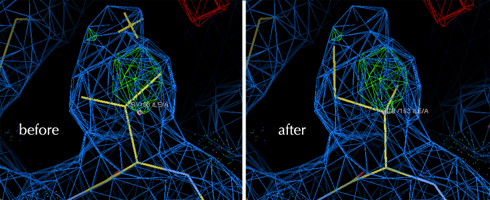
N/Q/H Flips
Return to the Validation GUI window, and find the list of Backwards Asn/Gln/His sidechains.
Asparagine, Glutamine, and Histidine sidechains are pseudo symmetric. They can easily be fit into electron density backwards, eliminating hydrogen bonds and introducing clashes. Hydrogen addition via Reduce (in Phenix, Coot, or MolProbity) will usually "flip" these N/Q/H residues to the positions with best steric contacts. Here, you can use Coot to force a necessary Histidine flip.
Select HIS 39 from the A chain, which will center on this residue in the Coot window. Note that the CD2 atom of His 39 and the N atom of Asp 41 are involved in a serious clash. If we flipped the His 180°, then the ND1 atom would be in a position to form a hydrogen bond with the backbone NH where this clash is.
Define a Real Space Refine Zone that includes HIS 39. In the refinement menu that pops up, look under "Active Refinement" and click the "Side-chain Flip 180°" button. (This flip only works on N/Q/H residues; use the Auto Fit Rotamer tool for other tasks.)
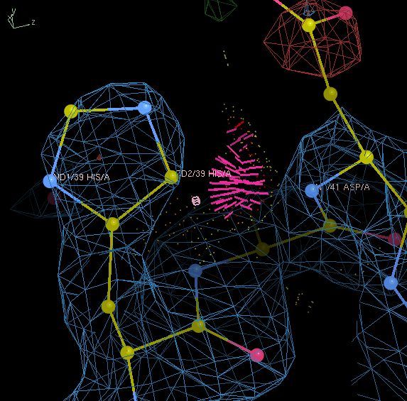
Clashes
Return to the Validation GUI window, and navigate to the Clash tab.
Steric clashes usually serve as emphasis on other model problems. However, there are some errors that are clearly diagnosed by clashes alone, such as N/Q/H flips and certain misplaced water molecules. There are many tools for identifying misplaced waters, and clashes are excellent for finding the most problematic ones.
Select "A 177 GLN HG3 ___ A 554 HOH O" from the list of clashes, which will center on this clash in the Coot window. Scroll the 2Fo-Fc map contour down, and note that this water has only marginal density even at a low contour. There's no justification for keeping a water in this position.
To remove this water, select the "Delete item" tool. In the Coot sidebar, it looks like a trash can. In the Delete item tool, toggle the Water mode, then click on the offending water.
The next water clash on the list, "A 275 VAL HG21 ___ A 577 HOH O", is another good example of an unjustified water marked by a clash. Try using Coot to remove it as well.
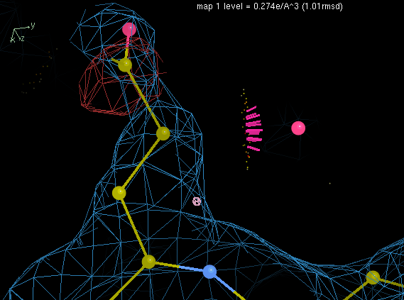
Notes
The kind of sidechain fixups you've done in KiNG or Coot can mostly be accomplished using real-space refinement in phenix.refine (which includes a rotamer correction component), up to somewhere between 2 and 2.5 Å (and of course NQH flips are done automatically by Reduce in either MolProbity or Phenix). At lower resolution, however, real-space refinement with rotamer correction cannot reliably discern between correct and incorrect rotamers. That's a hard job for people as well, but can often be done if you have the interactive information on clashes and H-bonds from the non-pairwise, H-aware all-atom-contact dots.
You can correct many of the other outliers in the GUI lists, especially the sidechains. Try a few!
You will need another set of tutorial data for this section. In the main Phenix window, go to New Project -> Set up tutorial data -> "Validation - xyloglucanase cis peptides".
If you are starting from the main Phenix window, select Comprehensive validation (X-ray/Neutron) as shown above. If you still have the comprehensive validation window open, return to the "Configure" tab. Select 2cn3.pdb as the input model and 2cn3.mtz as the reflections file. We will not use a restraints file this time, so clear that field if necessary. Now run the validation; this will take a few moments.
A type of outlier that can be very difficult for real-space refinement alone to resolve is an incorrect cis-peptide. The peptide bond between carbon and nitrogen joins adjacent amino acids. Due to the nearby carbonyl, the peptide bond has partial double bond character and does not rotate freely. Most peptides are trans, but genuine cis peptides occur preceding 5% of prolines and preceding about 1 in 3000 non-proline residues. Despite its rarity, a cis conformation can be tempting to model at lower resolutions because it may appear to fit constricted or patchy density. Once modeled, cis peptides are difficult to escape, since doing do would involve rotating 180 degrees through a high energetic barrier. Fortunately, there is a tool in Coot to simplify human-directed corrections.
Once the validation completes, open the model in Coot. Then move to the MolProbity tab of the validation output, and then the Protein tab within MolProbity. Scroll down to the bottom of the Protein tab to find Cis and Twisted peptides validation. Note the overall model statistics and the suspiciously high incidence of non-trans peptides in this model.
Peptide bonds necessarily span two residues, so both are listed in the validation output table. However, in shorthand, peptide bonds are properly associated with their following residue, due to the special relationship cis peptide bonds have with a following proline. Thus, "chain A GLY 161 to GLU 162" is a cis-Glu, and "chain A, GLY 293 to PRO 294" is a cis-Pro.
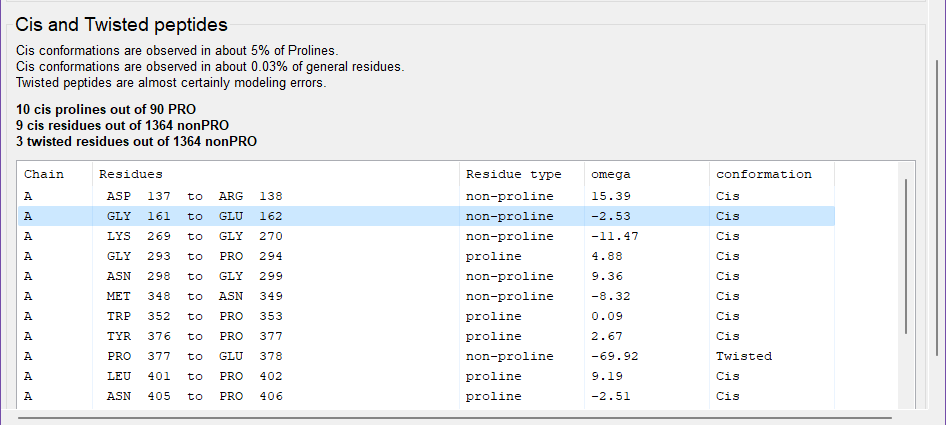
This structure is a xyloglucanase. Real cis-nonProline conformations are more common in carbohydrate-active enzymes like this one than elsewhere. As a result, this structure contains both real and incorrect cis peptides.
Justified cis conformations
We'll look at a real example first. Click on "GLY 161 to GLU 162" in the table, which will center Coot on the N atom of the peptide bond of interest. Note that Coot marks cis peptides with a colored trapezoid (green for cis-Proline, red for cis-nonProline, yellow for twisted). Scroll the electron density to a higher contour to convince yourself that cis truly is the best conformation to fit this region. You need this kind of strong support - from experimental data, homology, or chemistry - to justify cis-nonProlines.
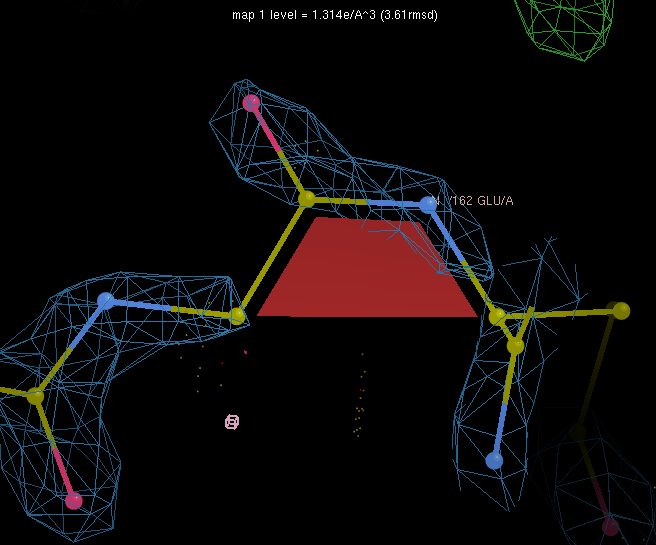
Mistaken cis conformations
Now we will fix a mistake. Click on "LYS 269 to GLY 270" to center the Coot window on this peptide bond. In addition to the red trapezoid marking the cis-peptide, there are large areas of difference density around the peptide bond. Also note the clash between the GLY 270 CA and the LYS 247 O.
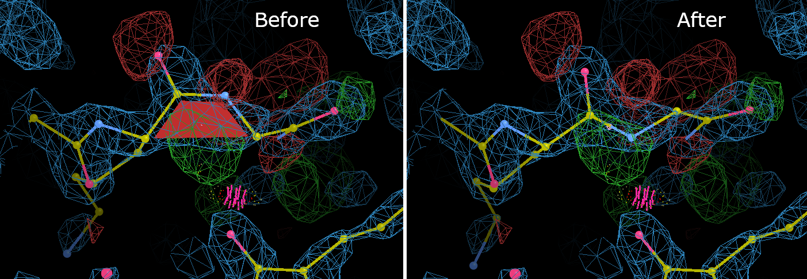
To perform the correction: Go to Calculate -> Other Modeling Tools from the Coot menu bar, and select Cis <-> Trans. Click on one of the atoms in the offending peptide bond, and Coot will flip the bond. The bond conformation has now been corrected, but the atoms have moved out of the density and geometry distortions have been introduced. Select Real Space Refine Zone, and then select atoms on either side of the peptide bond. This correction involved a large change, so be sure to give Coot at least two full residues on either side of the bond to work with. Once you have obtained a satisfactory local refinement, note that the GLY 270 N is now in position to form a hydrogen bond with the LYS 247 O, where the clash was.
ASN 298 to GLY 299 is another good example of a region with marginal electron density and a mistaken cis-peptide. Select it from the list and try fixing it. As a bonus, you can then move the ASN 298 sidechain into some highly likely positive difference density.
Testing both cis and trans
Finally, select "MET 348 to ASN 349" from the list. This region has no significant difference density, and the 2Fo-Fc map is fairly convincing. Nevertheless, let's test it. Try changing this peptide to trans and do a local refinement.
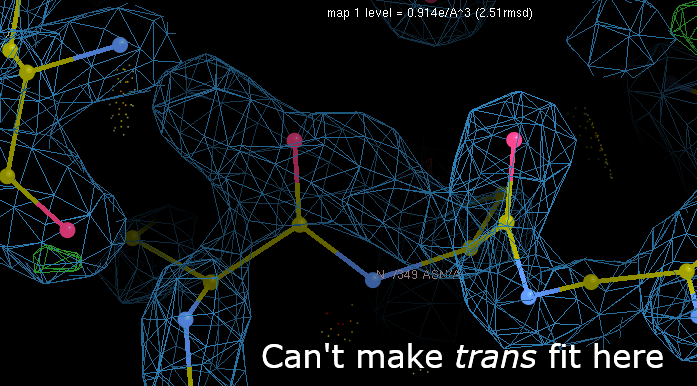
It's not a good fit to the density! Convince yourself that there's no way to get even a marginal fit from the trans conformation, then hit "Undo" until you get the cis-Asn back. Trying both possibilities like this can be a useful strategy.